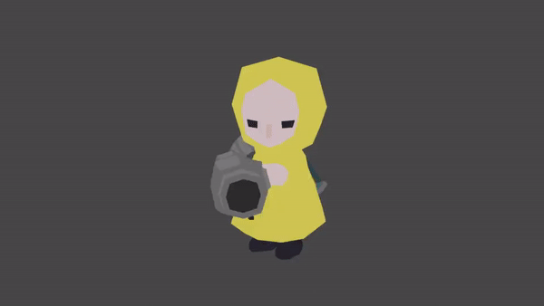
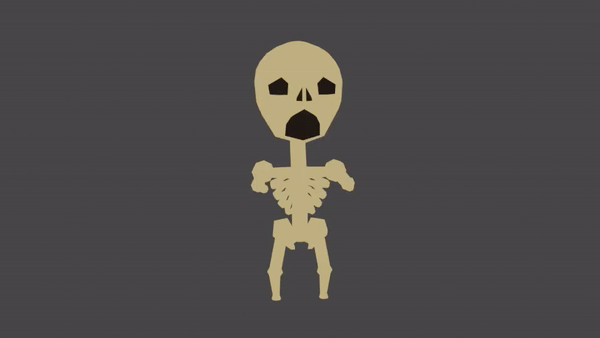
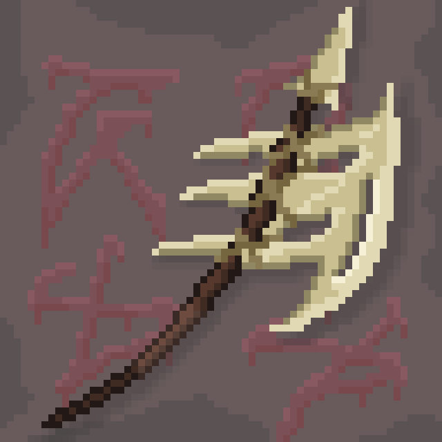
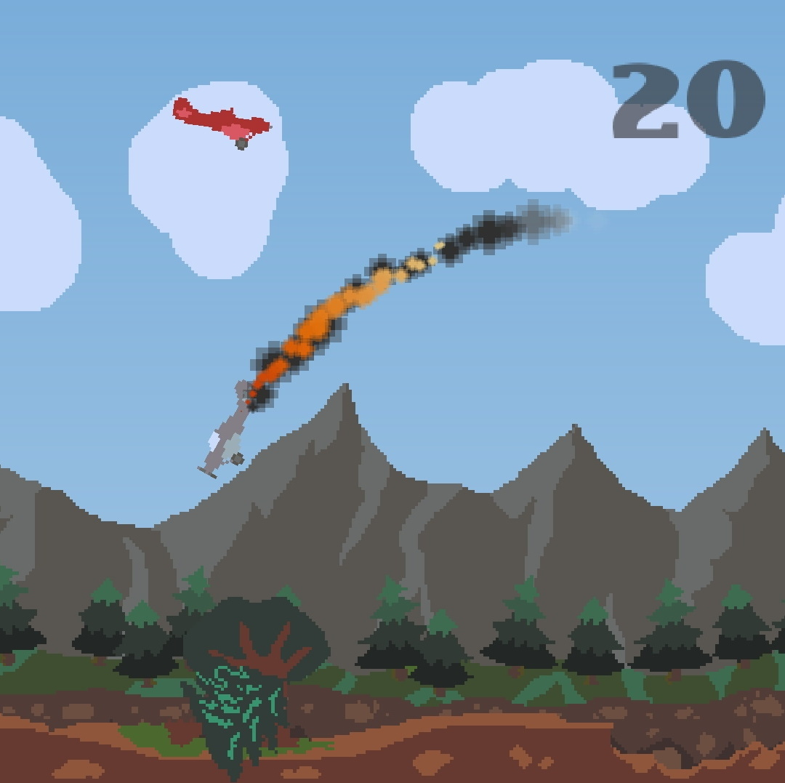
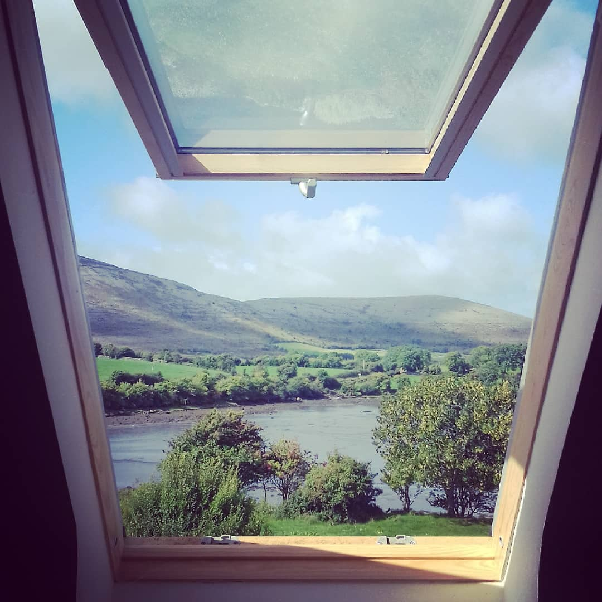
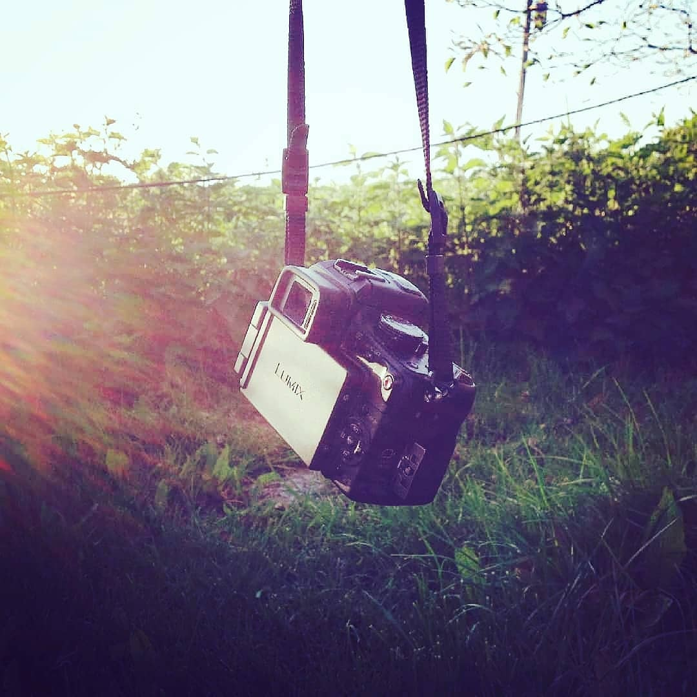

I got into 3D modelling using Blender, an open source 3D modelling tool, a couple years ago to make assets for my video games and I've used it on and off ever since.
In the last while, I decided to go back to it and try properly learn it, and fully utilise all it's features.
I still have a long path ahead of me, but it's path I'm excited to trek.
Below are two of the models I made recently for a Halloween themed game I'm working on.
|  |  |
Pixel art is another art form I got into for making game assets, but in recent times I've began to really appreciate it on its own.
I've partook in a couple short themed challenges, such as Pixel Dailies on Twitter, in which you are given a new theme each day to draw a piece for.
|  |  |
From as young as I can remember, I've always loved Photography. Whether I'm any good at it, though, is another topic.
I keep a little photography blog on instagram, where I post my favourite of the pictures I take, Though it's been inactive for quite some time now.
|  |  |